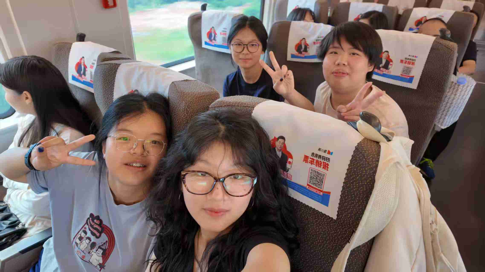

关于这次旅程
缘起
高考结束的那个夏天，我们决定用一场旅行告别青春。选择南京，因为这座城市的每一块城砖都镌刻着历史，每一片梧桐叶都承载着故事。
旅程意义
这不仅仅是一次地理上的移动，更是一次时间的穿越。从博物院的千年文物到总统府的近代风云，从钟山自然的灵动到音乐台生命的飞扬，我们在三天里走过了几个世纪。
致好友
感谢有你同行，让历史的厚重变得轻盈，让陌生的城市充满温度。这些共同经历的瞬间，已成为我们青春记忆中最珍贵的篇章。
"旅行真正的快乐不在于目的地，而在于它的过程。遇见不同的人，遭遇到奇奇怪怪的事，克服种种的困难，听听不同的语言，在我都是很大的快乐。"

出发时的我们